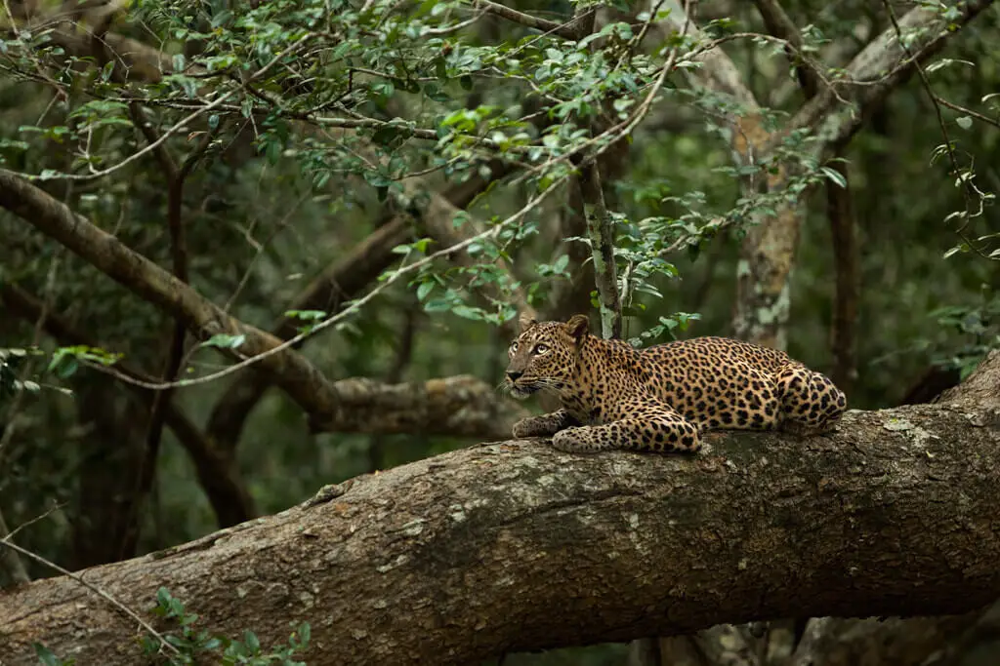

Зовнішній вигляд
Пантера — великий ссавець ряду хижих родини котових. Велика кішка з витягнутим і дещо стислим з боків м'язистим тілом, округлою головою, довгим хвостом і середньої довжини кінцівками.
Особливості будови
- Довжина тіла досягає 200—250 см (з яких 75-110 см припадають на хвіст).
- Маса самиць — 35-50 кг, самці — 45-70 кг.
- Зубів, як і у гепарда, 30.
